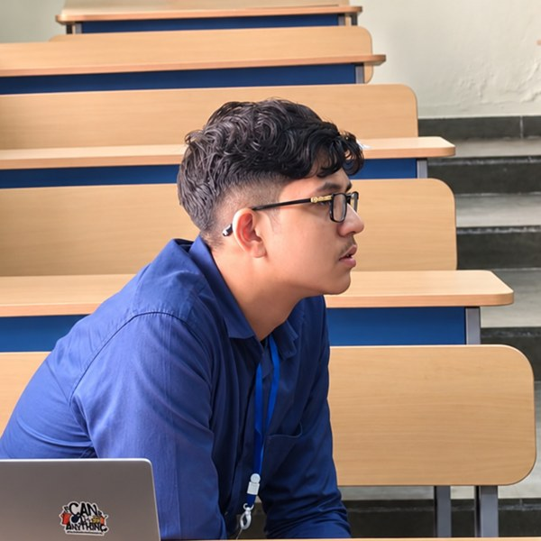
Amay Kashyap Deka
Transforming Assamese cancer care.
High school senior building at the intersection of computational oncology and clinical AI.
View resume ↗- amaykashyapdeka@gmail.com
- amay.kashyapdeka@einsteinmed.edu
- +91 98649 48633
- GitHub
- SwiftDx on LinkedIn
- guwahati, india
Currently
Previously
- Research and Science Initiative (RSI) — 1 of 32 scholars nationwide, IISc
- MycoStories, London — fungal biotech market intelligence intern
- Olympiads — Indian National Chemistry Olympiad (INChO) qualifier, top 0.3%; National Standard Examination in Chemistry (NSEC) state topper; Indian National Mathematical Olympiad (INMO) qualifier, top 1%
Projects
SwiftDxAI surgical pathology · 2026–
Surgeons often wait on slow, lab-dependent H&E staining and manual margin checks before knowing whether a tumour has been fully removed — a bottleneck where pathologists are scarce. SwiftDx generates virtual H&E stains and runs tumour-margin AI (MONAI margin assessment, confidence scoring, boundary overlays, FHIR reporting) so the answer arrives in the operating workflow. Patent application in process.
Harvard Health Systems Innovation Lab Hackathon winner (Malaysia Hub) in the world's largest medical hackathon, with 13,000 submissions from more than 50 countries; top 20 finalist globally, pitched to VCs at Boston Health Week. 4 pilots across 3 countries, validation with 4 university hospitals. Partnered with the Commonwealth Medical Association across 50 countries. Nominated for the Pradhan Mantri Rashtriya Bal Puraskar (National Child Award), with a letter of recommendation from Pankaj Chakravarty.
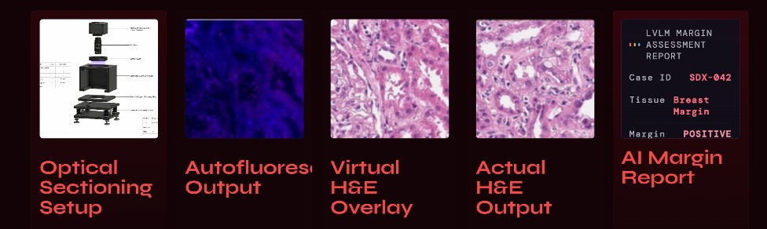
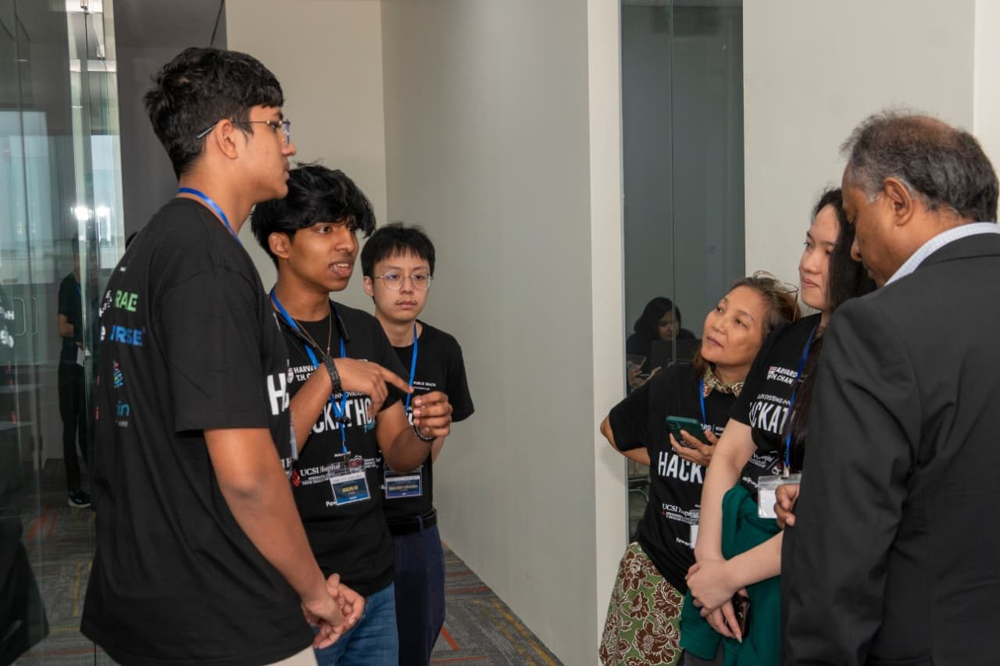
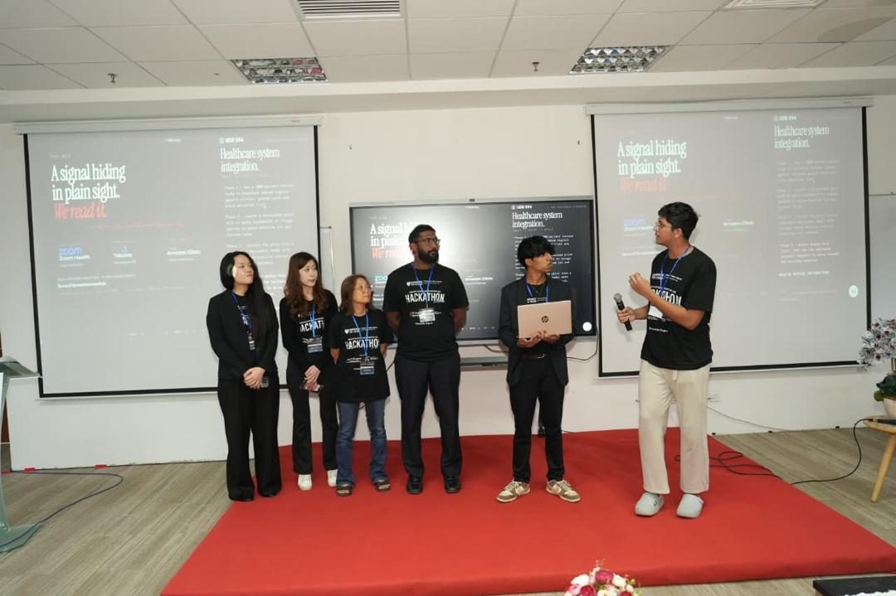
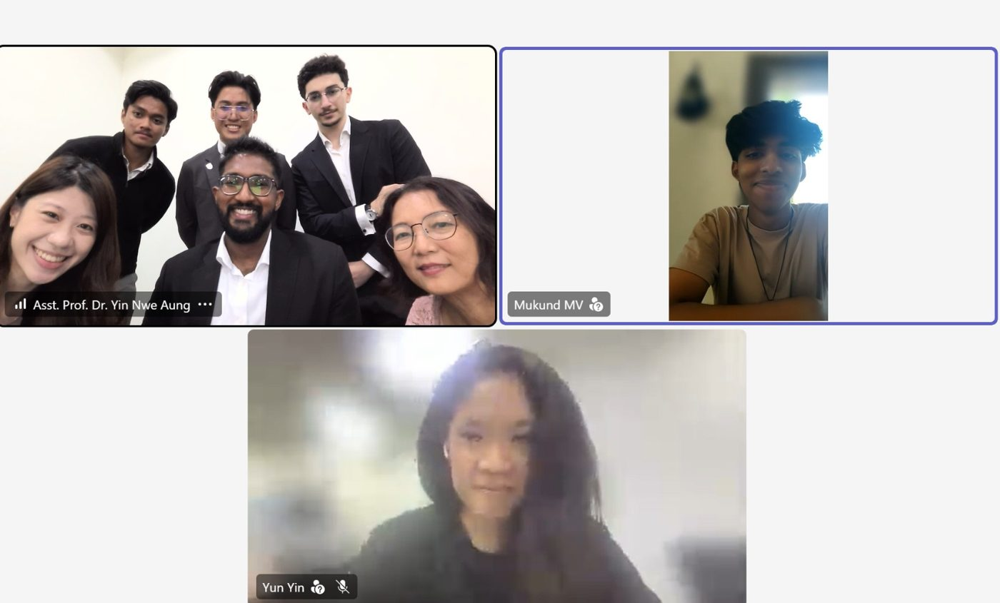
MONAI-based margin assessment with confidence scoring and boundary overlays; results exported as FHIR reports.
pitch · code · linkedin · swiftdx.health · collaborations
RAGPhysicianClinical AI · 2025–
Physicians need quick, trustworthy answers from patient spreadsheets, but sensitive records can't be pasted into cloud chatbots. RAGPhysician is a private desktop app (Electron, React, TypeScript, LangChain retrieval pipeline) that answers clinical CSV queries locally, with citations back to the source rows. Now being piloted in the oncology department at Einstein School of Medicine.
Electron + React + TypeScript front end; LangChain retrieval pipeline over local CSVs with citation-backed answers.
Graph-RLMLongitudinal reasoning · 2025–
Reasoning over years of a breast-oncology patient's record is costly: RAG fragments the story and full-context prompting burns hundreds of thousands of tokens. Graph-RLM converts records into directed clinical graphs and lets a recursive language model walk them. On a 30-question evidence-linked benchmark it hit 100% accuracy at ~31 tokens per query, versus 100% at ~1,132 for RAG and 96.67% at ~137,000 for full context. The benchmark is small, so these are early results rather than a final verdict, and we are actively expanding it in our internal testing.
Records become directed clinical graphs; each of the 30 benchmark questions is tied to explicit supporting graph nodes, compared against RAG, standard RLM and full-context baselines.
SMARCE1 pan-cancer studyGenomics · 2026
SMARCE1's role across cancers was unclear beyond a few tumour types. I analysed expression in 148K+ patients across 12 pan-cancer studies, mapping 33 cancers, and found widespread overexpression, strongest in thymoma. Published in the Oxford Journal of Student Scholarship.
Tumour-vs-normal expression from GEPIA2 and alteration frequencies from cBioPortal across 33 cancer types (148K+ patients, 12 studies). Largest increases in THYM, DLBC and CHOL; alterations in under 1% of patients, mostly amplifications in epithelial cancers and mutations/deletions in CNS cancers. Log-rank survival analysis found no significant link to overall survival, including in low-grade glioma (15.3 vs 49.0 months, p = 0.084), which the paper frames as hypothesis-generating.
Pratishruti HPV driveCommunity health · 2023–
Cervical cancer is preventable, but HPV vaccines are out of reach for many families in Assam because of cost and awareness. We ran an ICMR-backed vaccination drive that secured 10K Cervavac doses with income-based subsidies and coordinated ~100 volunteers, making it the largest HPV vaccination drive run by a non-profit. We also made 80+ home visits to breast-cancer patients. The case study was published, with me as an author.
Income-based subsidies on 10K Cervavac doses; ~100 volunteers coordinated; accompanying surveys and case study published.
Non-targeted milk adulteration detectionRSI · Raman · 2026
Roughly 650–700 million litres of milk are consumed in India every day, and adulteration can enter anywhere along its supply chain. Most tests are built for one adulterant at a time, and ML classifiers need labelled examples of each, so none of them can flag a contaminant nobody thought to look for. We built a detector that doesn't need to know the adulterant: it learns what pure pasteurised milk looks like in Raman spectra, and flags anything that deviates from it.
Under Prof. Utpal Tatu at IISc, with HORIBA Labs, we collected Raman spectra of pure milk, built a consensus reference from 45 control spectra, and scored each test sample by how far it sits from that reference. It was tested against milk spiked with antibiotics, urea, starch, vegetable oil and water. The result is a rapid, non-destructive, ~10-minute check, and each flag can be traced back to specific spectral regions, so it stays interpretable.
Five aggregation metrics (mean, B-spline mean, median, geometric median, Wasserstein barycentre) build the reference; Euclidean deviation plus Daubechies-4 wavelet features give the authenticity score; threshold set by Youden's J. AUC 0.884 on the deployment set. Scoring only the Amide I and C–H stretch windows cut overfitting. 532 nm laser, LabRAM HR Evolution, well-plate acquisition, Savitzky–Golay smoothing and ALS baseline correction.
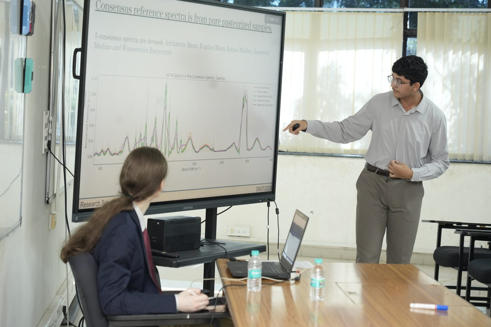
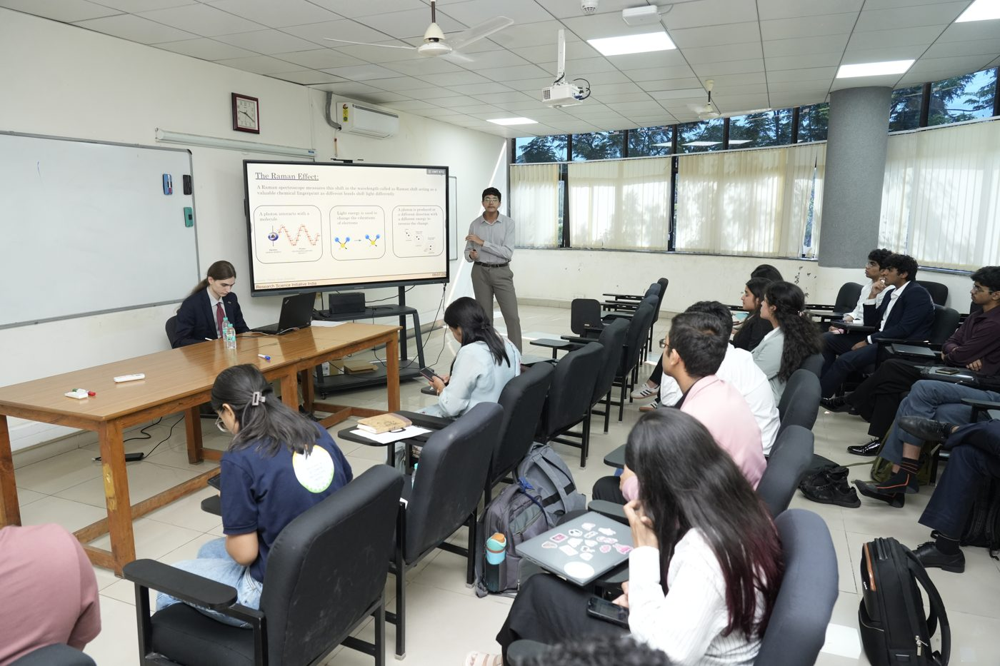
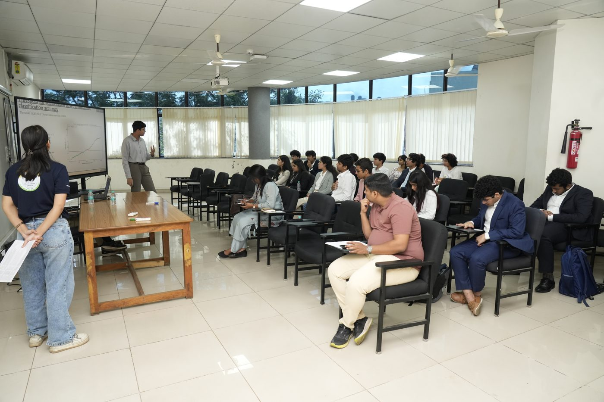
North-East Indian vaginal microbiomeRSI · Nanopore · 2026
Indian women are a severely understudied cohort in vaginal microbiome research: most of what we know about a "healthy" microbiome comes from other populations, and the North-East of India is barely represented at all. Without a local baseline, it is hard to say what normal looks like here, or how it relates to infections and cancers such as cervical cancer, which is a major burden in Assam. We sequenced the vaginal microbiome of North-East Indian women with Oxford Nanopore metagenomics to start building that baseline.
Oxford Nanopore metagenomic sequencing of North-East Indian cohorts, as part of the RSI research programme at IISc.
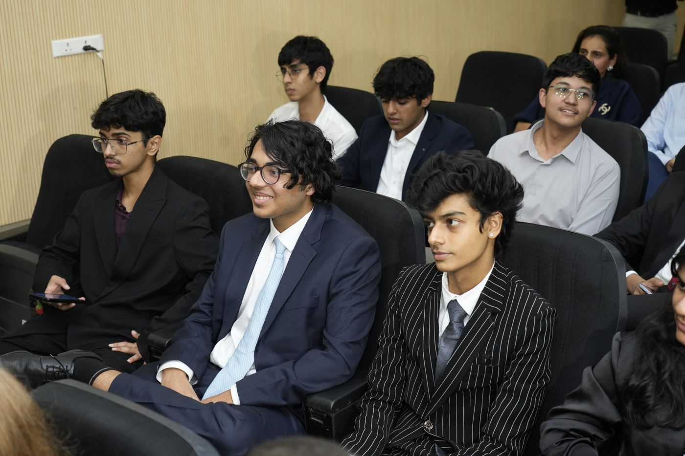
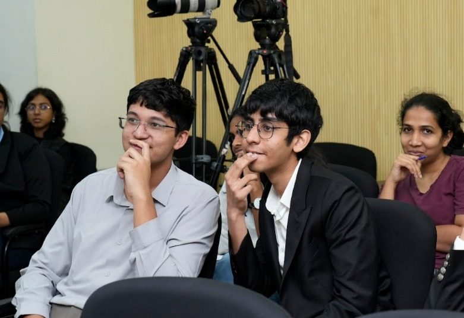
Extra
Musicon repeat right now
Seriestop 5
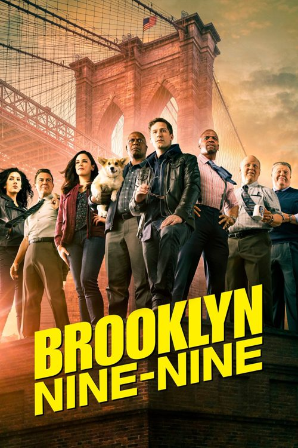
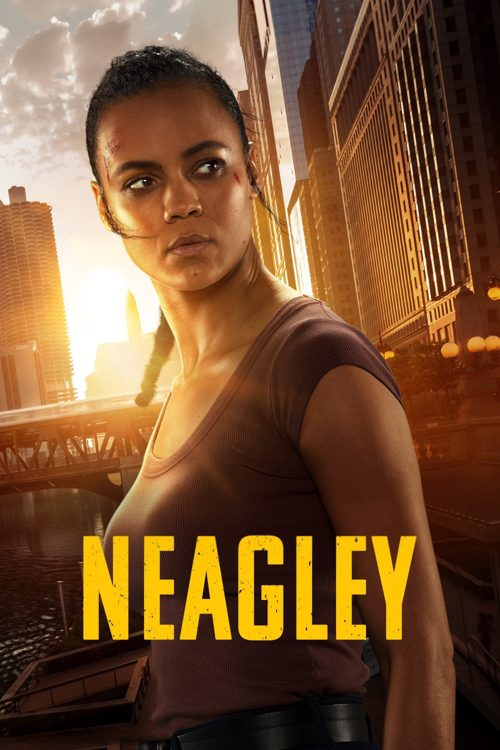
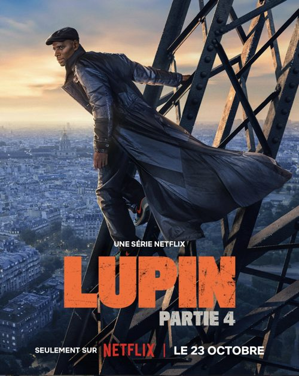
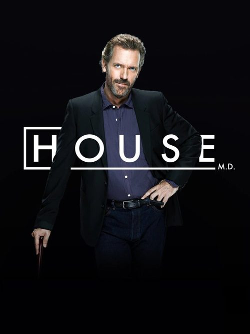
Eatstop 3
- Halab — Kuala Lumpur
- Rynsan — Shillong
- The Bombay Canteen — Mumbai
Random sidequestsa few photos
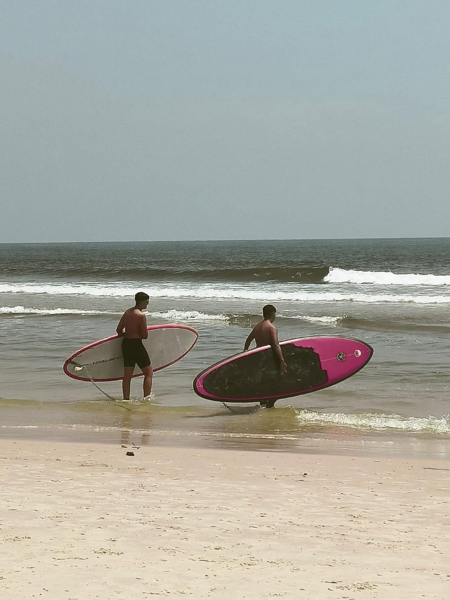
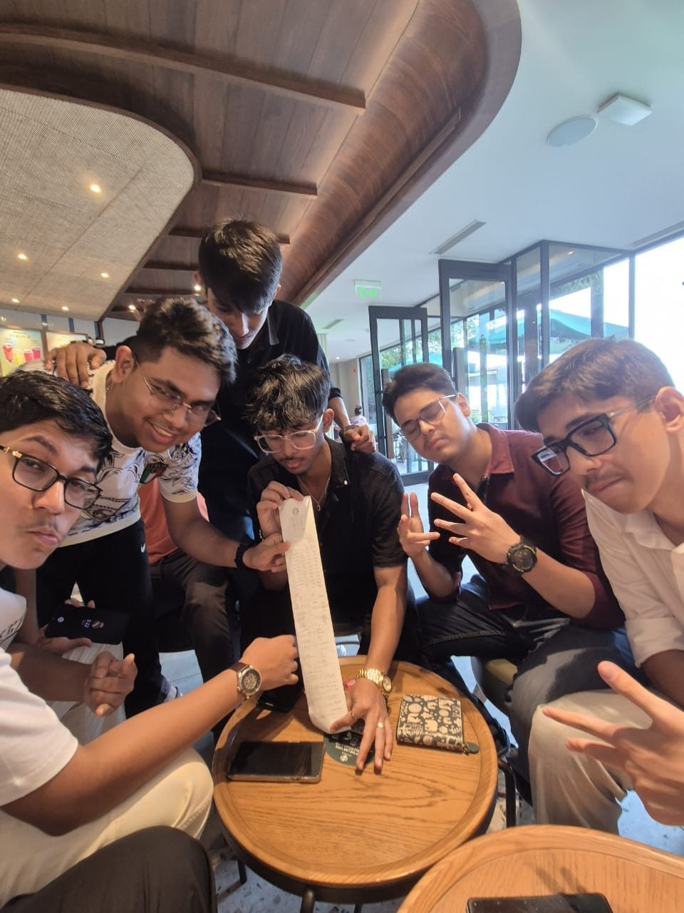
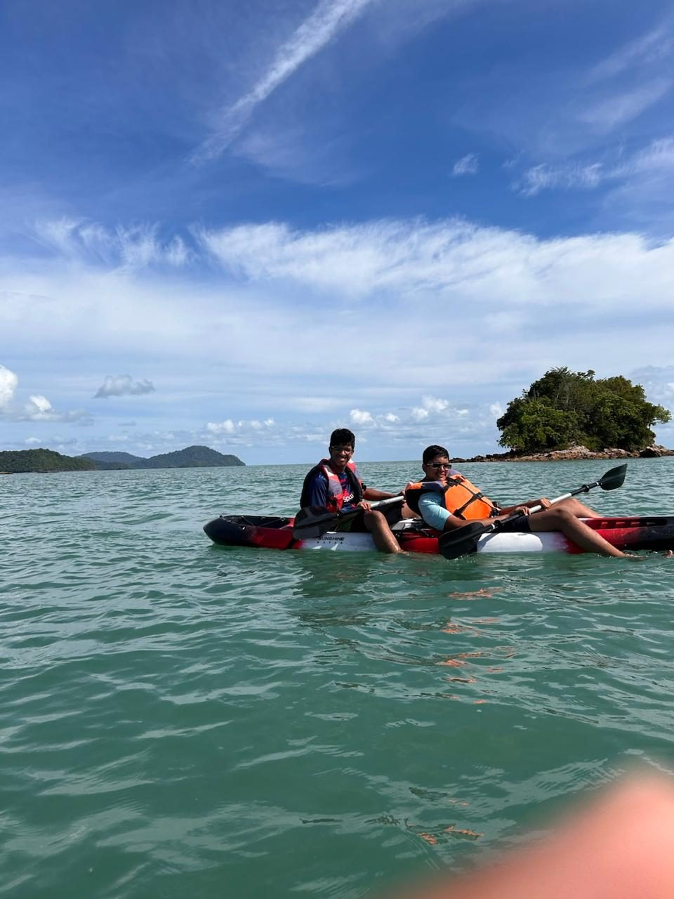
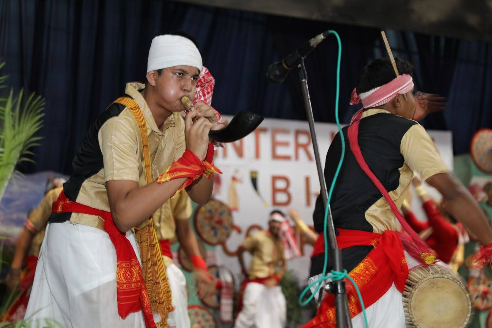